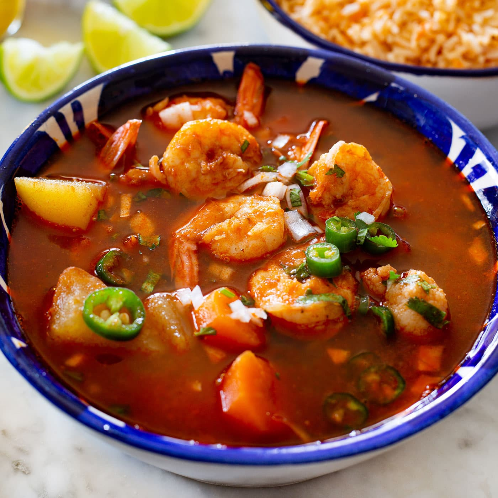

Home
Caldo de Camarones

Descripcion
Delicioso caldo de camarones picosito acompañado con trozos de papas y
zanahoria
Ingredientes
- 4 Cucharadas de aceite vegetal
- 1 Cucharada de ajo, picado
- 1/4 Pieza de cebolla picada finamente
- 1 Kilogramo de camarón, con cáscara y limpio
- 1/2 Cucharadita de pimienta negra, molida
- 1/2 Cucharadita de sal con cebolla, en polvo
- 2 Tazas de puré de tomate natural
- 2 Chiles anchos sin semillas y remojados en agua caliente
- 2 Chiles chipotle adobados
- 2 Cubos de Concentrado de Tomate con Pollo CONSOMATE®
- 1 1/2 Litros de agua
- 10 Ramitas de epazote, desinfectado
- 1 Papa limpia, cortada en cubos y cocida
Preparacion
-
Calienta el aceite en una olla, añade el ajo y la cebolla; cocina hasta
que cambien de color. Añade los camarones y cocina por 3 minutos; sazona
con la pimienta y la sal con cebolla, reserva.
Licua
-
Para el caldo, licúa el puré con los chiles, el Concentrado de Tomate
con Pollo CONSOMATE® y el agua; cuela y vierte sobre la preparación
anterior. Añade el epazote y la papa. Cocina hasta que hierva.
- Sirve, y acompaña con cebolla finamente picada y limon